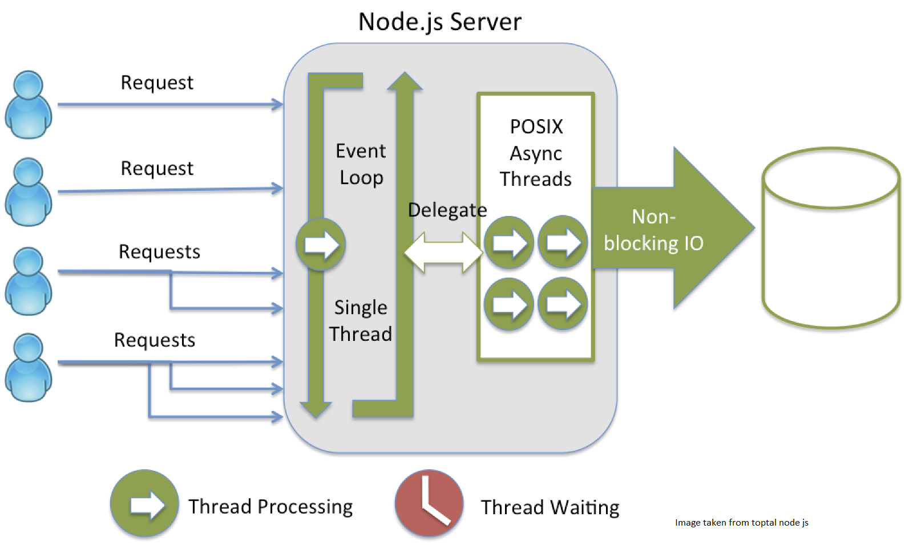

Node.js is a JavaScript runtime built on Chrome’s V8 JavaScript engine. Node.js uses an event-driven,
non-blocking I/O model that makes it lightweight and efficient.
It’s an asynchronous event driven JavaScript runtime, which is designed to build
scalable network applications.It can handle many concurrent connections at a time, where when connection request are made concurrently for each connection
a callback is fired .If there is no task to be performed Node will go to sleep.
The main idea of Node.js: use non-blocking, event-driven I/O to remain lightweight and efficient in the face of data-intensive real-time applications that run across distributed devices. Node.js operates on a single-thread, using non-blocking I/O calls, allowing it to support tens of thousands of concurrent connections. npm is a Node.js package of open source library which is one of the largest libraries.

It’s an asynchronous event driven JavaScript runtime, which is designed to build scalable network applications.It can handle many concurrent connections at a time, where when connection request are made concurrently for each connection a callback is fired .If there is no task to be performed Node will go to sleep.
Node.js is a server-side programming framework, built on Chrome's JavaScript engine, this makes possible event-driven and non-blocking I/O. node.js is that it has an asynchronous way of execution wherein it is very appropriate in execution of task at the same time . It is suitable for applications where connections should be kept connected.